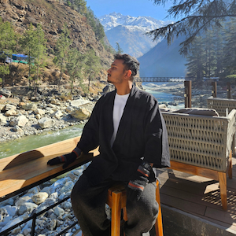

Kunal
Professionally fine, personally a mess
Allegedly an adult. Here for the links, occasionally here for the opinions.
links
writing

Professionally fine, personally a mess
Allegedly an adult. Here for the links, occasionally here for the opinions.
links
writing